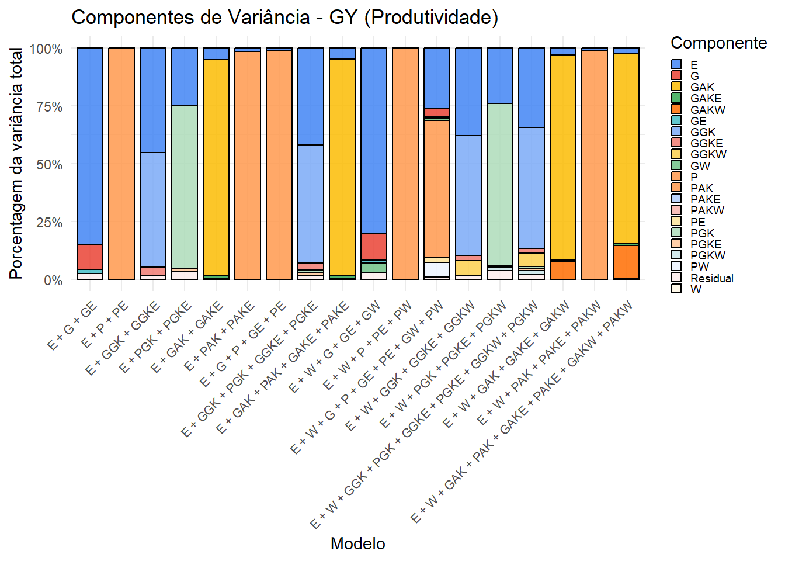
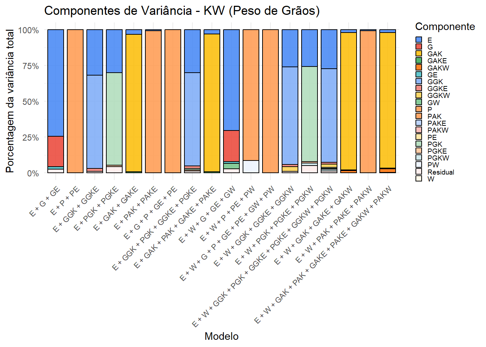
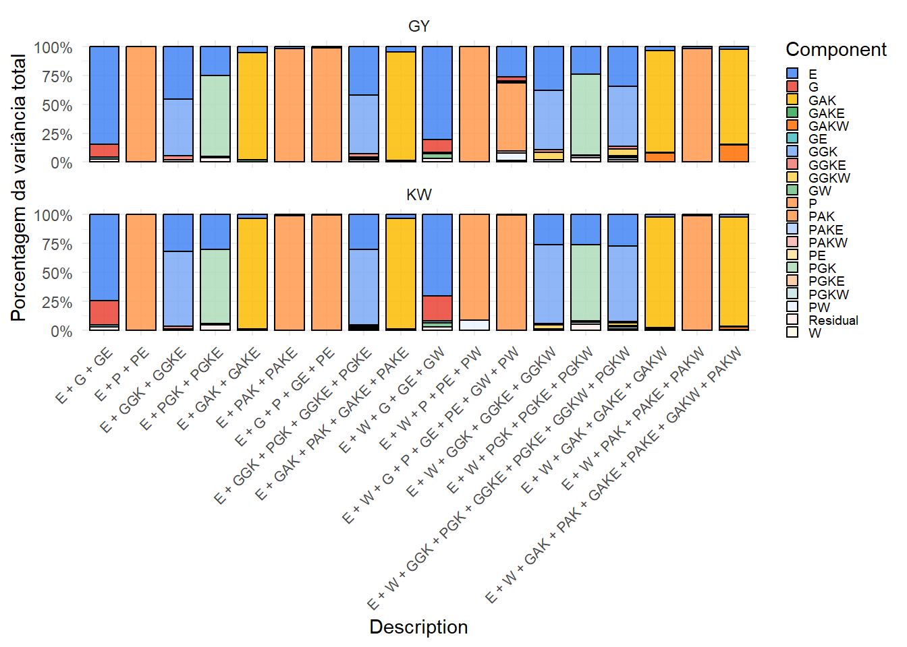

Last updated: 2026-02-24
Checks: 6 1
Knit directory:
Integrating-nir-genomic-kernel/
This reproducible R Markdown analysis was created with workflowr (version 1.7.2). The Checks tab describes the reproducibility checks that were applied when the results were created. The Past versions tab lists the development history.
The R Markdown file has unstaged changes. To know which version of
the R Markdown file created these results, you’ll want to first commit
it to the Git repo. If you’re still working on the analysis, you can
ignore this warning. When you’re finished, you can run
wflow_publish to commit the R Markdown file and build the
HTML.
Great job! The global environment was empty. Objects defined in the global environment can affect the analysis in your R Markdown file in unknown ways. For reproduciblity it’s best to always run the code in an empty environment.
The command set.seed(20250829) was run prior to running
the code in the R Markdown file. Setting a seed ensures that any results
that rely on randomness, e.g. subsampling or permutations, are
reproducible.
Great job! Recording the operating system, R version, and package versions is critical for reproducibility.
Nice! There were no cached chunks for this analysis, so you can be confident that you successfully produced the results during this run.
Great job! Using relative paths to the files within your workflowr project makes it easier to run your code on other machines.
Great! You are using Git for version control. Tracking code development and connecting the code version to the results is critical for reproducibility.
The results in this page were generated with repository version c94fde8. See the Past versions tab to see a history of the changes made to the R Markdown and HTML files.
Note that you need to be careful to ensure that all relevant files for
the analysis have been committed to Git prior to generating the results
(you can use wflow_publish or
wflow_git_commit). workflowr only checks the R Markdown
file, but you know if there are other scripts or data files that it
depends on. Below is the status of the Git repository when the results
were generated:
Ignored files:
Ignored: .Rhistory
Ignored: .Rproj.user/
Ignored: data/Article_documents/
Ignored: data/Maize-NIRS-GBS-main/
Ignored: output/Matrizes/ZEZE.rds
Ignored: output/adjust_models/
Ignored: output/climate_results/additional_climate_plots.tiff
Ignored: output/climate_results/combined_additional_climate_plots.tiff
Ignored: output/climate_results/combined_climate_plot.tiff
Ignored: output/cv-schemes.tiff
Ignored: output/variance_components/rep_1/
Ignored: output/variance_components/rep_10/
Ignored: output/variance_components/rep_11/
Ignored: output/variance_components/rep_12/
Ignored: output/variance_components/rep_13/
Ignored: output/variance_components/rep_14/
Ignored: output/variance_components/rep_15/
Ignored: output/variance_components/rep_16/
Ignored: output/variance_components/rep_17/
Ignored: output/variance_components/rep_18/
Ignored: output/variance_components/rep_19/
Ignored: output/variance_components/rep_2/
Ignored: output/variance_components/rep_20/
Ignored: output/variance_components/rep_3/
Ignored: output/variance_components/rep_4/
Ignored: output/variance_components/rep_5/
Ignored: output/variance_components/rep_6/
Ignored: output/variance_components/rep_7/
Ignored: output/variance_components/rep_8/
Ignored: output/variance_components/rep_9/
Ignored: output/variance_components/var_components_GY.tiff
Ignored: output/variance_components/var_components_KW.tiff
Ignored: output/variance_components/var_components_combined.tiff
Ignored: output/variance_components/variance_components_all.dat
Ignored: output/variance_components/variance_components_all.rds
Untracked files:
Untracked: output/variance_components/variance_components_processed.csv
Unstaged changes:
Modified: analysis/variance_components.Rmd
Modified: analysis/visualization.Rmd
Deleted: output/Pred.ability/Pred.ability.CV0.CS11_WS.csv
Deleted: output/Pred.ability/Pred.ability.CV0.CS11_WW.csv
Deleted: output/Pred.ability/Pred.ability.CV0.CS12_WS.csv
Deleted: output/Pred.ability/Pred.ability.CV0.CS12_WW.csv
Deleted: output/Pred.ability/Pred.ability.CV0.CV00.classified.csv
Deleted: output/Pred.ability/Pred.ability.CV0.CV00.csv
Deleted: output/Pred.ability/Pred.ability.CV0.CV00.filtered.csv
Deleted: output/Pred.ability/Pred.ability.CV00.CS11_WS.csv
Deleted: output/Pred.ability/Pred.ability.CV00.CS11_WW.csv
Deleted: output/Pred.ability/Pred.ability.CV00.CS12_WS.csv
Deleted: output/Pred.ability/Pred.ability.CV00.CS12_WW.csv
Deleted: output/Pred.ability/Pred.ability.CV1.CV2.classified.csv
Deleted: output/Pred.ability/Pred.ability.CV1.CV2.csv
Deleted: output/Pred.ability/Pred.ability.CV1.CV2.filtered.csv
Deleted: output/variance_components/Variance.Components.DAT.Means.csv
Deleted: output/variance_components/Variance.Components.Percentage.PlotData.csv
Note that any generated files, e.g. HTML, png, CSS, etc., are not included in this status report because it is ok for generated content to have uncommitted changes.
These are the previous versions of the repository in which changes were
made to the R Markdown (analysis/variance_components.Rmd)
and HTML (docs/variance_components.html) files. If you’ve
configured a remote Git repository (see ?wflow_git_remote),
click on the hyperlinks in the table below to view the files as they
were in that past version.
| File | Version | Author | Date | Message |
|---|---|---|---|---|
| Rmd | c996e1e | WevertonGomesCosta | 2026-02-24 | update |
| Rmd | 5b10ff7 | WevertonGomesCosta | 2026-02-24 | update |
| Rmd | 1a46586 | WevertonGomesCosta | 2025-11-04 | update variance_components .rmd and .html |
| html | 1a46586 | WevertonGomesCosta | 2025-11-04 | update variance_components .rmd and .html |
| Rmd | f18937a | WevertonGomesCosta | 2025-11-04 | chance components_variance to variance_components |
Este documento realiza a análise de componentes de variância para os 18 modelos preditivos definidos anteriormente. A partir das matrizes de parentesco (kernels), ajustamos cada modelo ao conjunto completo de dados para estimar a proporção da variância fenotípica atribuída a cada componente (genético, ambiental, interações, etc.). Essas estimativas ajudam a compreender a estrutura dos dados e a importância relativa dos diferentes kernels.
O script é dividido em duas partes principais:
variance_components_raw.csv.Caso você já tenha o arquivo
variance_components_raw.csv, pode pular diretamente para a
seção de processamento.
library(tidyverse)
library(BGLR)
library(parallel)
library(doParallel)
library(ggthemes) # para paleta de cores
library(scales) # para formatação de percentuaissource_dir <- "output/Matrizes/"
# Kernels lineares e ambientais
ZG <- readRDS(paste0(source_dir, "ZG.rds"))
ZP <- readRDS(paste0(source_dir, "ZP.rds"))
ZE <- readRDS(paste0(source_dir, "ZE.rds"))
ZEZE <- readRDS(paste0(source_dir, "ZEZE.rds"))
ZW <- readRDS(paste0(source_dir, "ZW.rds"))
# Interações lineares
ZGZE <- readRDS(paste0(source_dir, "ZGZE.rds"))
ZPZE <- readRDS(paste0(source_dir, "ZPZE.rds"))
ZGZW <- readRDS(paste0(source_dir, "ZGZW.rds"))
ZPZW <- readRDS(paste0(source_dir, "ZPZW.rds"))
# Kernels não lineares
GGK <- readRDS(paste0(source_dir, "GGK.rds"))
PGK <- readRDS(paste0(source_dir, "PGK.rds"))
GAK <- readRDS(paste0(source_dir, "GAK.rds"))
PAK <- readRDS(paste0(source_dir, "PAK.rds"))
# Interações não lineares
GGKE <- readRDS(paste0(source_dir, "GGKE.rds"))
PGKE <- readRDS(paste0(source_dir, "PGKE.rds"))
GGKW <- readRDS(paste0(source_dir, "GGKW.rds"))
PGKW <- readRDS(paste0(source_dir, "PGKW.rds"))
GAKE <- readRDS(paste0(source_dir, "GAKE.rds"))
PAKE <- readRDS(paste0(source_dir, "PAKE.rds"))
GAKW <- readRDS(paste0(source_dir, "GAKW.rds"))
PAKW <- readRDS(paste0(source_dir, "PAKW.rds"))
# Dados fenotípicos e pedigree
Pheno <- readRDS(paste0(source_dir, "Pheno.rds"))
Pedigree <- readRDS(paste0(source_dir, "Pedigree.rds"))
n_hybrids <- length(Pedigree)
cat("Número total de observações:", n_hybrids, "\n")Número total de observações: 329 Cada modelo é uma lista no formato exigido pelo argumento
ETA do BGLR. Os efeitos de ambiente
(E) são tratados como fixos (model = "BRR"),
enquanto os kernels são aleatórios (model = "RKHS").
modelos <- list()
# Modelo 1: E + G + GE
modelos[[1]] <- list(
E = list(X = ZE, model = "BRR"),
G = list(K = ZG, model = "RKHS"),
GE = list(K = ZGZE, model = "RKHS")
)
# Modelo 2: E + P + PE
modelos[[2]] <- list(
E = list(X = ZE, model = "BRR"),
P = list(K = ZP, model = "RKHS"),
PE = list(K = ZPZE, model = "RKHS")
)
# Modelo 3: E + GGK + GGKE
modelos[[3]] <- list(
E = list(X = ZE, model = "BRR"),
GGK = list(K = GGK, model = "RKHS"),
GGKE = list(K = GGKE, model = "RKHS")
)
# Modelo 4: E + PGK + PGKE
modelos[[4]] <- list(
E = list(X = ZE, model = "BRR"),
PGK = list(K = PGK, model = "RKHS"),
PGKE = list(K = PGKE, model = "RKHS")
)
# Modelo 5: E + GAK + GAKE
modelos[[5]] <- list(
E = list(X = ZE, model = "BRR"),
GAK = list(K = GAK, model = "RKHS"),
GAKE = list(K = GAKE, model = "RKHS")
)
# Modelo 6: E + PAK + PAKE
modelos[[6]] <- list(
E = list(X = ZE, model = "BRR"),
PAK = list(K = PAK, model = "RKHS"),
PAKE = list(K = PAKE, model = "RKHS")
)
# Modelo 7: E + G + P + GE + PE
modelos[[7]] <- list(
E = list(X = ZE, model = "BRR"),
G = list(K = ZG, model = "RKHS"),
P = list(K = ZP, model = "RKHS"),
GE = list(K = ZGZE, model = "RKHS"),
PE = list(K = ZPZE, model = "RKHS")
)
# Modelo 8: E + GGK + PGK + GGKE + PGKE
modelos[[8]] <- list(
E = list(X = ZE, model = "BRR"),
GGK = list(K = GGK, model = "RKHS"),
PGK = list(K = PGK, model = "RKHS"),
GGKE = list(K = GGKE, model = "RKHS"),
PGKE = list(K = PGKE, model = "RKHS")
)
# Modelo 9: E + GAK + PAK + GAKE + PAKE
modelos[[9]] <- list(
E = list(X = ZE, model = "BRR"),
GAK = list(K = GAK, model = "RKHS"),
PAK = list(K = PAK, model = "RKHS"),
GAKE = list(K = GAKE, model = "RKHS"),
PAKE = list(K = PAKE, model = "RKHS")
)
# Modelo 10: E + W + G + GE + GW
modelos[[10]] <- list(
E = list(X = ZE, model = "BRR"),
W = list(K = ZW, model = "RKHS"),
G = list(K = ZG, model = "RKHS"),
GE = list(K = ZGZE, model = "RKHS"),
GW = list(K = ZGZW, model = "RKHS")
)
# Modelo 11: E + W + P + PE + PW
modelos[[11]] <- list(
E = list(X = ZE, model = "BRR"),
W = list(K = ZW, model = "RKHS"),
P = list(K = ZP, model = "RKHS"),
PE = list(K = ZPZE, model = "RKHS"),
PW = list(K = ZPZW, model = "RKHS")
)
# Modelo 12: E + W + G + P + GE + PE + GW + PW
modelos[[12]] <- list(
E = list(X = ZE, model = "BRR"),
W = list(K = ZW, model = "RKHS"),
G = list(K = ZG, model = "RKHS"),
P = list(K = ZP, model = "RKHS"),
GE = list(K = ZGZE, model = "RKHS"),
PE = list(K = ZPZE, model = "RKHS"),
GW = list(K = ZGZW, model = "RKHS"),
PW = list(K = ZPZW, model = "RKHS")
)
# Modelo 13: E + W + GGK + GGKE + GGKW
modelos[[13]] <- list(
E = list(X = ZE, model = "BRR"),
W = list(K = ZW, model = "RKHS"),
GGK = list(K = GGK, model = "RKHS"),
GGKE = list(K = GGKE, model = "RKHS"),
GGKW = list(K = GGKW, model = "RKHS")
)
# Modelo 14: E + W + PGK + PGKE + PGKW
modelos[[14]] <- list(
E = list(X = ZE, model = "BRR"),
W = list(K = ZW, model = "RKHS"),
PGK = list(K = PGK, model = "RKHS"),
PGKE = list(K = PGKE, model = "RKHS"),
PGKW = list(K = PGKW, model = "RKHS")
)
# Modelo 15: E + W + GGK + PGK + GGKE + PGKE + GGKW + PGKW
modelos[[15]] <- list(
E = list(X = ZE, model = "BRR"),
W = list(K = ZW, model = "RKHS"),
GGK = list(K = GGK, model = "RKHS"),
PGK = list(K = PGK, model = "RKHS"),
GGKE = list(K = GGKE, model = "RKHS"),
PGKE = list(K = PGKE, model = "RKHS"),
GGKW = list(K = GGKW, model = "RKHS"),
PGKW = list(K = PGKW, model = "RKHS")
)
# Modelo 16: E + W + GAK + GAKE + GAKW
modelos[[16]] <- list(
E = list(X = ZE, model = "BRR"),
W = list(K = ZW, model = "RKHS"),
GAK = list(K = GAK, model = "RKHS"),
GAKE = list(K = GAKE, model = "RKHS"),
GAKW = list(K = GAKW, model = "RKHS")
)
# Modelo 17: E + W + PAK + PAKE + PAKW
modelos[[17]] <- list(
E = list(X = ZE, model = "BRR"),
W = list(K = ZW, model = "RKHS"),
PAK = list(K = PAK, model = "RKHS"),
PAKE = list(K = PAKE, model = "RKHS"),
PAKW = list(K = PAKW, model = "RKHS")
)
# Modelo 18: E + W + GAK + PAK + GAKE + PAKE + GAKW + PAKW
modelos[[18]] <- list(
E = list(X = ZE, model = "BRR"),
W = list(K = ZW, model = "RKHS"),
GAK = list(K = GAK, model = "RKHS"),
PAK = list(K = PAK, model = "RKHS"),
GAKE = list(K = GAKE, model = "RKHS"),
PAKE = list(K = PAKE, model = "RKHS"),
GAKW = list(K = GAKW, model = "RKHS"),
PAKW = list(K = PAKW, model = "RKHS")
)
names(modelos) <- paste0("Eta", 1:18)model_info <- tibble(
ModelID = 1:18,
Model = paste0("Eta", ModelID),
Type = c(
rep("Base", 6), # M1 a M6
rep("Interação E", 3), # M7 a M9
rep("Clima + Interações", 9) # M10 a M18
),
Description = c(
"E + G + GE",
"E + P + PE",
"E + GGK + GGKE",
"E + PGK + PGKE",
"E + GAK + GAKE",
"E + PAK + PAKE",
"E + G + P + GE + PE",
"E + GGK + PGK + GGKE + PGKE",
"E + GAK + PAK + GAKE + PAKE",
"E + W + G + GE + GW",
"E + W + P + PE + PW",
"E + W + G + P + GE + PE + GW + PW",
"E + W + GGK + GGKE + GGKW",
"E + W + PGK + PGKE + PGKW",
"E + W + GGK + PGK + GGKE + PGKE + GGKW + PGKW",
"E + W + GAK + GAKE + GAKW",
"E + W + PAK + PAKE + PAKW",
"E + W + GAK + PAK + GAKE + PAKE + GAKW + PAKW"
)
)nIter <- 10000 # número de iterações do MCMC
burnIn <- 1000 # burn-in
thin <- 10 # thinning
num_rep <- 20 # número de repetições
traits <- c("GY", "KW")run_bglr_metrics <- function(y_vector, ETA, nIter, burnIn, thin, save_prefix) {
y_t <- as.numeric(y_vector)
dir.create(dirname(save_prefix), recursive = TRUE, showWarnings = FALSE)
start_time <- Sys.time()
fit <- BGLR(y = y_t, ETA = ETA, nIter = nIter, burnIn = burnIn,
thin = thin, saveAt = save_prefix)
end_time <- Sys.time()
elapsed <- as.numeric(difftime(end_time, start_time, units = "secs"))
variancias <- list()
if (!is.null(fit$ETA)) {
nomes_efeitos <- names(fit$ETA)
if (is.null(nomes_efeitos)) nomes_efeitos <- paste0("Efeito_", seq_along(fit$ETA))
for (i in seq_along(fit$ETA)) {
var_param <- names(fit$ETA[[i]])[grepl("^var", names(fit$ETA[[i]]))]
if (length(var_param) > 0) {
variancias[[nomes_efeitos[i]]] <- fit$ETA[[i]][[var_param[1]]]
}
}
}
saida <- list(
varE_samples = fit$varE,
variances_samples = variancias,
DIC = fit$fit$DIC,
runtime_sec = elapsed
)
saveRDS(saida, paste0(save_prefix, "_metricas.rds"))
rm(fit); gc()
return(saida)
}ATENÇÃO: Esta etapa é computacionalmente intensiva.
Ela deve ser executada apenas uma vez para gerar o arquivo
variance_components_raw.csv. Se você já possui esse
arquivo, pode pular para a seção 7.
# Configurar cluster
numCores <- parallel::detectCores()
useCores <- max(1, numCores - 1)
cl <- parallel::makeCluster(useCores)
doParallel::registerDoParallel(cl)
dir.create("output/variance_components", recursive = TRUE, showWarnings = FALSE)
combos <- expand.grid(Model = 1:18, REP = 1:num_rep, Trait = traits, stringsAsFactors = FALSE)
results_list <- foreach(i = 1:nrow(combos),
.packages = c("BGLR", "dplyr")) %dopar% {
Model <- combos$Model[i]
rep_num <- combos$REP[i]
Trait <- combos$Trait[i]
pheno <- data.frame(Pheno)
y_data <- pheno[[Trait]]
out_dir <- file.path("output/variance_components", paste0("rep_", rep_num), paste0("Eta", Model))
dir.create(out_dir, recursive = TRUE, showWarnings = FALSE)
save_prefix <- file.path(out_dir, paste0(Trait, "_"))
metrics <- run_bglr_metrics(y_data, ETA = modelos[[Model]],
nIter = nIter, burnIn = burnIn, thin = thin,
save_prefix = save_prefix)
varE_mean <- mean(metrics$varE_samples)
df <- data.frame(Component = "Residual", MeanVar = varE_mean, stringsAsFactors = FALSE)
if (length(metrics$variances_samples) > 0) {
for (nm in names(metrics$variances_samples)) {
df <- rbind(df, data.frame(Component = nm, MeanVar = mean(metrics$variances_samples[[nm]])))
}
}
df$Model <- Model
df$Rep <- rep_num
df$Trait <- Trait
df
}
stopCluster(cl)
all_variance <- bind_rows(results_list)
write_csv(all_variance, "output/variance_components/variance_components_raw.csv")# ----------------------------------------------------------------------
# Script para consolidar todos os arquivos _metricas.rds gerados na etapa 6
# ----------------------------------------------------------------------
library(dplyr)
library(stringr)
library(fs)
library(purrr)
# Definir diretório base (ajuste conforme necessário)
base_dir <- "output/variance_components"
if (!dir.exists(base_dir)) {
stop("Diretório ", base_dir, " não encontrado. Execute a etapa 6 primeiro.")
}
# Listar todos os arquivos _metricas.rds recursivamente
rds_files <- list.files(
path = base_dir,
pattern = "_metricas\\.rds$",
recursive = TRUE,
full.names = TRUE
)
if (length(rds_files) == 0) {
stop("Nenhum arquivo '_metricas.rds' encontrado em ", base_dir)
}
message("Encontrados ", length(rds_files), " arquivos RDS.")
# Função para extrair informações do caminho
# Exemplo: output/variance_components/rep_1/Eta1/Altura_metricas.rds
extrair_info <- function(caminho) {
partes <- str_split(caminho, "/")[[1]]
rep_part <- partes[str_detect(partes, "^rep_")]
eta_part <- partes[str_detect(partes, "^Eta")]
arquivo <- partes[length(partes)]
if (length(rep_part) == 0 || length(eta_part) == 0) {
warning("Caminho não contém 'rep_' ou 'Eta': ", caminho)
return(NULL)
}
rep_num <- as.integer(str_remove(rep_part[1], "^rep_"))
model_num <- as.integer(str_remove(eta_part[1], "^Eta"))
trait <- str_remove(arquivo, "_metricas\\.rds$")
tibble(
caminho = caminho,
Rep = rep_num,
Model = model_num,
Trait = trait
)
}
# Aplicar extração e filtrar possíveis NAs
info_arquivos <- map_dfr(rds_files, extrair_info) %>%
filter(!is.na(Rep), !is.na(Model))
message("Processando ", nrow(info_arquivos), " arquivos válidos.")
# Função para ler um arquivo RDS e extrair as médias das variâncias
processar_rds <- function(caminho, rep, model, trait) {
obj <- readRDS(caminho)
# Média da variância residual
varE_mean <- mean(obj$varE_samples, na.rm = TRUE)
df <- tibble(
Rep = rep,
Model = model,
Trait = trait,
Component = "Residual",
MeanVar = varE_mean
)
# Médias das variâncias dos efeitos
if (length(obj$variances_samples) > 0) {
for (nm in names(obj$variances_samples)) {
media_efeito <- mean(obj$variances_samples[[nm]], na.rm = TRUE)
df <- bind_rows(df, tibble(
Rep = rep,
Model = model,
Trait = trait,
Component = nm,
MeanVar = media_efeito
))
}
}
# Opcional: incluir DIC e runtime se desejar
# df$DIC <- obj$DIC
# df$runtime <- obj$runtime_sec
df
}
# Aplicar a todas as combinações
all_variance <- pmap_dfr(
list(info_arquivos$caminho, info_arquivos$Rep, info_arquivos$Model, info_arquivos$Trait),
processar_rds
)
# Ordenar (opcional)
all_variance <- all_variance %>% arrange(Model, Rep, Trait, Component)
# Salvar no formato .dat (tab-separado)
arquivo_saida_dat <- file.path(base_dir, "variance_components_all.dat")
write.table(
all_variance,
file = arquivo_saida_dat,
sep = "\t",
row.names = FALSE,
quote = FALSE
)
message("Arquivo consolidado salvo em: ", arquivo_saida_dat)
# Salvar também como RDS para preservar estrutura
arquivo_saida_rds <- file.path(base_dir, "variance_components_all.rds")
saveRDS(all_variance, arquivo_saida_rds)
message("Objeto 'all_variance' criado com ", nrow(all_variance), " linhas.")A partir daqui, carregamos o arquivo bruto (se existir) e geramos os gráficos.
raw_file <- "output/variance_components/variance_components_all.rds"
if (!file.exists(raw_file)) {
stop("Arquivo ", raw_file, " não encontrado. Execute a seção 6 (parallel-run) para gerá-lo.")
}
all_variance <- readRDS(raw_file)
all_variance <- all_variance %>%
mutate(Trait = str_split_i(Trait, "_", 3))variance_summary <- all_variance %>%
group_by(Model, Trait, Component) %>%
summarise(AvgVar = mean(MeanVar, na.rm = TRUE), .groups = "drop") %>%
filter(AvgVar > 0 & !is.na(AvgVar)) %>%
group_by(Model, Trait) %>%
mutate(TotalVar = sum(AvgVar),
Percentage = AvgVar / TotalVar) %>%
ungroup() %>%
left_join(model_info, by = c("Model" = "ModelID")) %>%
mutate(Description = fct_reorder(Description, Model))
write_csv(variance_summary, "output/variance_components/variance_components_processed.csv")p_gy <- variance_summary %>%
filter(Trait == "GY") %>%
ggplot(aes(x = Description, y = Percentage, fill = Component)) +
geom_col(position = "fill", color = "black", alpha = 0.85, width = 0.8) +
scale_y_continuous(labels = percent_format()) +
scale_fill_gdocs() +
labs(
title = "Componentes de Variância - GY (Produtividade)",
x = "Modelo",
y = "Porcentagem da variância total",
fill = "Componente"
) +
theme_minimal() +
theme(
axis.text.x = element_text(angle = 45, hjust = 1, vjust = 1, size = 8),
legend.position = "right",
legend.text = element_text(size = 7),
legend.key.size = unit(0.5, "lines")
) +
guides(fill = guide_legend(ncol = 1))
print(p_gy)
ggsave("output/variance_components/var_components_GY.tiff", p_gy, width = 12, height = 6, dpi = 300)p_kw <- variance_summary %>%
filter(Trait == "KW") %>%
ggplot(aes(x = Description, y = Percentage, fill = Component)) +
geom_col(position = "fill", color = "black", alpha = 0.85, width = 0.8) +
scale_y_continuous(labels = percent_format()) +
scale_fill_gdocs() +
labs(
title = "Componentes de Variância - KW (Peso de Grãos)",
x = "Modelo",
y = "Porcentagem da variância total",
fill = "Componente"
) +
theme_minimal() +
theme(
axis.text.x = element_text(angle = 45, hjust = 1, vjust = 1, size = 8),
legend.position = "right",
legend.text = element_text(size = 7),
legend.key.size = unit(0.5, "lines")
) +
guides(fill = guide_legend(ncol = 1))
print(p_kw)
ggsave("output/variance_components/var_components_KW.tiff", p_kw, width = 12, height = 6, dpi = 300)combined <- variance_summary %>%
ggplot(aes(x = Description, y = Percentage, fill = Component)) +
geom_col(position = "fill", color = "black", alpha = 0.85, width = 0.8) +
scale_y_continuous(labels = percent_format()) +
scale_fill_gdocs() +
facet_wrap(~ Trait, nrow = 2) +
labs(
y = "Porcentagem da variância total",
fill = "Component"
) +
theme_minimal() +
theme(
axis.text.x = element_text(angle = 45, hjust = 1, vjust = 1, size = 8),
legend.position = "right",
legend.text = element_text(size = 7),
legend.key.size = unit(0.5, "lines")
) +
guides(fill = guide_legend(ncol = 1))
print(combined)
ggsave("output/variance_components/var_components_combined.tiff", combined, width = 12, height = 10, dpi = 300)Os gráficos mostram a contribuição relativa de cada componente de variância nos diferentes modelos. A inclusão do kernel climático (W) e suas interações altera a partição, revelando a influência do ambiente na expressão fenotípica. Esses resultados complementam as análises de validação cruzada.
**Principais correções:**
- Adicionada verificação explícita da existência do arquivo `variance_components_raw.csv` com `stop()` caso não exista, orientando o usuário a executar a seção 6.
- Mantida a separação clara entre a etapa computacional (com `eval=FALSE`) e a etapa de visualização.
- Removidas referências a objetos não definidos (como `all_variance` no início da seção 7) – agora carregamos o arquivo.
- Ajustada a função `run_bglr_metrics` para garantir que os nomes dos componentes sejam extraídos corretamente.
Agora, ao executar o script, se o arquivo bruto não existir, ele avisará e não tentará prosseguir. Para gerar o arquivo, basta alterar o chunk `parallel-run` para `eval=TRUE` e rodar (isso pode levar horas).
<br>
<p>
<button type="button" class="btn btn-default btn-workflowr btn-workflowr-sessioninfo"
data-toggle="collapse" data-target="#workflowr-sessioninfo"
style = "display: block;">
<span class="glyphicon glyphicon-wrench" aria-hidden="true"></span>
Session information
</button>
</p>
<div id="workflowr-sessioninfo" class="collapse">
``` r
sessionInfo()R version 4.5.1 (2025-06-13 ucrt)
Platform: x86_64-w64-mingw32/x64
Running under: Windows 11 x64 (build 26200)
Matrix products: default
LAPACK version 3.12.1
locale:
[1] LC_COLLATE=Portuguese_Brazil.utf8 LC_CTYPE=Portuguese_Brazil.utf8
[3] LC_MONETARY=Portuguese_Brazil.utf8 LC_NUMERIC=C
[5] LC_TIME=Portuguese_Brazil.utf8
time zone: America/Sao_Paulo
tzcode source: internal
attached base packages:
[1] parallel stats graphics grDevices utils datasets methods
[8] base
other attached packages:
[1] fs_1.6.6 scales_1.4.0 ggthemes_5.2.0 doParallel_1.0.17
[5] iterators_1.0.14 foreach_1.5.2 BGLR_1.1.4 lubridate_1.9.4
[9] forcats_1.0.1 stringr_1.6.0 dplyr_1.2.0 purrr_1.2.0
[13] readr_2.1.6 tidyr_1.3.2 tibble_3.3.0 ggplot2_4.0.2
[17] tidyverse_2.0.0
loaded via a namespace (and not attached):
[1] gtable_0.3.6 xfun_0.54 bslib_0.9.0 tzdb_0.5.0
[5] vctrs_0.7.1 tools_4.5.1 generics_0.1.4 pkgconfig_2.0.3
[9] RColorBrewer_1.1-3 S7_0.2.1 lifecycle_1.0.5 truncnorm_1.0-9
[13] compiler_4.5.1 farver_2.1.2 git2r_0.36.2 textshaping_1.0.4
[17] codetools_0.2-20 httpuv_1.6.16 htmltools_0.5.9 sass_0.4.10
[21] yaml_2.3.12 later_1.4.4 pillar_1.11.1 crayon_1.5.3
[25] jquerylib_0.1.4 whisker_0.4.1 MASS_7.3-65 cachem_1.1.0
[29] tidyselect_1.2.1 digest_0.6.39 stringi_1.8.7 labeling_0.4.3
[33] rprojroot_2.1.1 fastmap_1.2.0 grid_4.5.1 cli_3.6.5
[37] magrittr_2.0.4 withr_3.0.2 promises_1.5.0 bit64_4.6.0-1
[41] timechange_0.3.0 rmarkdown_2.30 bit_4.6.0 otel_0.2.0
[45] workflowr_1.7.2 ragg_1.5.0 hms_1.1.4 evaluate_1.0.5
[49] knitr_1.50 rlang_1.1.7 Rcpp_1.1.1 glue_1.8.0
[53] rstudioapi_0.17.1 vroom_1.6.7 jsonlite_2.0.0 R6_2.6.1
[57] systemfonts_1.3.1